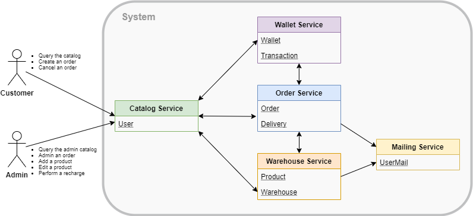
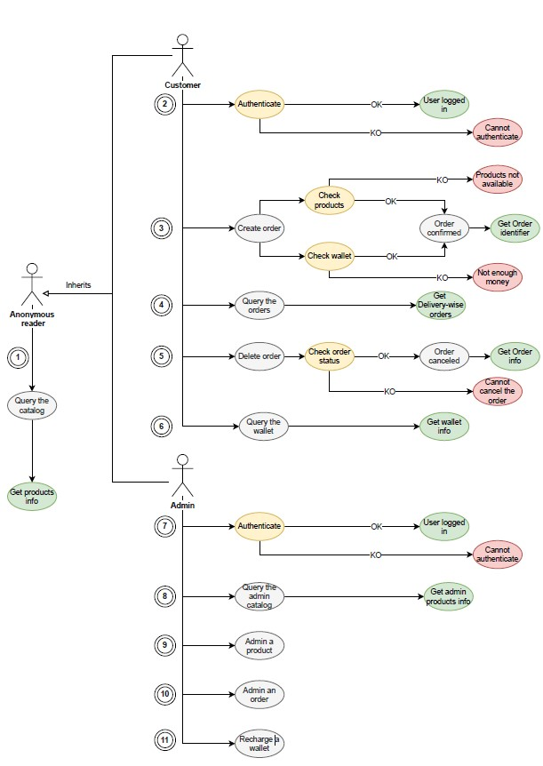
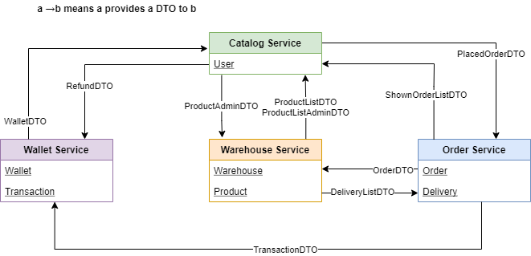
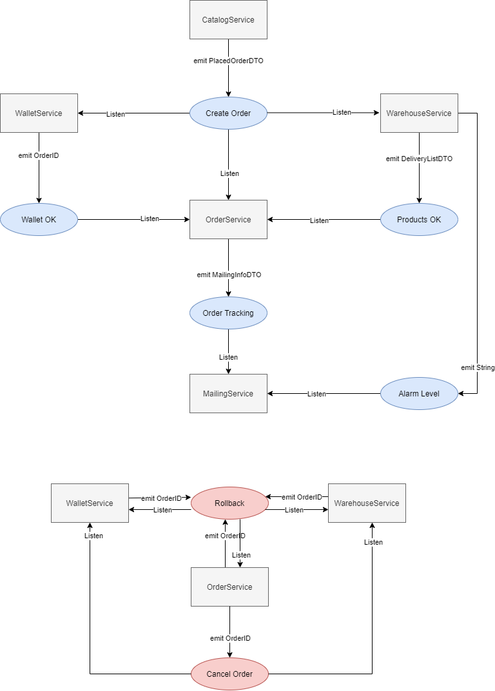

The goal of the presented project is to build a RESTful API for an eCommerce system exploiting the Spring Boot framework and based on the novel paradigm of distributed microservices. This architecture allows flexibility in deploying each basic component (i.e.μS) in a different location, either a physical server or a cloud-hosted virtual machine. This advantage comes at the cost of an error-prone (network) communication among each infrastructural node, while the traditional monolithicapproach is more straightforward in terms of communication (i.e. simple method invocation or IPC).
The web application is composed of the following microservices:
This figure explains the data responsibility (i.e. which piece of information is held in eachμS) and the interactions among the components. 
All the functional requirements and their high-level implementation are depicted in the above picture. Three actors can be defined:
Anonymous reader: represents a non-authenticated user, which canquery the catalog(1) and retrieve a list of all the available products together with their price, quantity, description, picture, and category. Technically, this is done through a GET request on the specific endpoint exposed by the CatalogService, which in turn performs a GET request on an endpoint exposed by the WarehouseService, which is in charge of storing products’ information.
Customer: represents an authenticated customer, extending the requirements already available for an anonymous reader. A customer can login(2) using his own credentials. A convenient way to handle the authentication mechanism is to store in-memory users. He can submit a request tocreate an order(3). This operation comes in two different flavours:synchronousand asynchronous. In both cases, two main controls have to be performed before confirming the order: checking if the user has enough money in his wallet and if there are enough products. When the order is confirmed, the customer receives the order identifier, which can also be used toquery the customer’s orders (4) at any time through a specific endpoint exposed by the CatalogService. Notice that when the order is displayed to the customer, it will be split into as many parts as the number of deliveries associated with it. Each part of the order will have its own status, giving the user more fine-grained control over the tracking. If an order has been confirmed but not yet shipped, the customer can decide todelete the order(5). Similar to what is said for the order creation, also the order cancellation can be performed synchronously or asynchronously. Whenever an order is confirmed, failed, or deleted, the customer will receive an email notifying the event. In the end, a customer can query his own wallet (6), to verify the remaining amount of money and all the performed transactions.
Admin: represents a user authenticated as a system administrator, extending the requirements already available for an anonymous reader. As for the customer, the admin can login (7) exploiting the same in- memory user management system. An admin can also query the admin catalog(8), which contains more detailed information about where each product is stored (i.e. in which warehouse), and the alarm levelof a given product, indicating when the stock is running out of a product; when a threshold is exceeded, an email is sent to the admin notifying the event. Admins can alsoedit a product(9), edit an order(10) and recharge the wallet of an user(11). A detailed view of all the exposed endpoints of eachμS is accessible in the documentation of the repository.

The main drawback of the microservice architecture is the difficulties encountered in handlingdistributed transactions. Those are sequence of operations that can be either all correct (i.e. commit) or just a single failure requires to restore the previous situation (i.e.rollback). The Use Case 3, described above, is an example of distributed transaction because it involves several DB updates, such as money withdrawal, products reservation, and shipping tracking. All those information has to be coherent along all the involved MongoDB collections, even though they are handled by differentμSs. One way to implement distributed transactions across multiple μSs is offered by the SAGA paradigm. If an operation within a given transaction fails, the SAGA relies on the notion ofcompensating transactions, which means each local operation must be able to be reverted running another action. The SAGA object is created by CatalogService and composed of an ID, that is a unique identifier representing the order, the user ID, and a purchase list (map of product, quantity, and price). EachμS implements a local operational logger that contains all the information needed in case of rollback. The SAGA paradigm has been implemented in both the orchestrator and choreography flavors.
In the synchronous implementation of the order creation SAGA, the communication between the services is implemented with REST API. The CatalogService starts the order SAGA, delegating the role of the synchronous orchestrator to the OrderService, which is in charge of sequentially requesting operations to the WalletService and WarehouseService. In the above figure is shown a high-level representation of how the μSs communicate with each other. After receiving an order request (1), the OrderService requests the WalletService to perform a transaction (2) on the user’s wallet and lock the money; if the operation is successful (3), it queries the WarehouseService (4) to provide the list of deliveries to be shipped (5) and then it commits the transaction on the WalletService (6). The OrderService then sends a confirmation mail to the user (7), returns the order, and starts the deliveries (8). If any of these operations fail, the OrderService sends a rollback request providing the SAGA ID to the WalletService and WarehouseService, returning also an error to the CatalogService. In this implementation OrderService is a single point of failuresince both the commit and rollback operations are completely handled by this service.

On the other hand, in the asynchronous implementation of the order creation SAGA, the communication between the services is implemented throughKafka. This technology implements a publishsubscribe patternand it involves a centralbrokerable to notify all the interestedμSs. This even-based communication style enforces an asynchronous paradigm in which every event is triggered by a μS and every other entity knows how to react properly. The pictures shows how the SAGA is initialized by the CatalogService (who creates its unique ID) and it is notified on thecreate_ordertopic. All the interested services react to this request by predisposing the order (i.e. OrderService) or by checking internal availability (i.e. WalletService and WarehouseService). The latter entities notify the correct execution of the withdrawal (onwallet_okand products_oktopics respectively) or rollback the entire transaction. In this scenario, the OrderService has only the responsibility of committing the transaction when all three conditions are satisfied and properly communicated on their specific topics. Beware that this highly parallelized solution increases the speed of the creation, but does not provide any guarantees on the sequentiality of the events. An alternative solution would be letting the OrderService starting the SAGA, gaining in a stricter order of arrival, but falling back to an orchestrator-like role (with all the previously presented issues). Therollbacktopic is relevant for all the three services actively involved in the transaction. The content of this event is the ID of the SAGA to dismiss. Thanks to the internal operational logging, each μS is capable of restoring the previous status (i.e. undo the operation) without needing any further information. The explicit deletion of an order from a customer is overlapping, at a practical level, with the rollback operation (i.e. all the money and products have to be restored), but it is semantically different and requires an initial check on the actual existence of the specified order. For this reason, in this situation, the workflow is forced to synchronously reach the OrderService (owning the order data) which has the responsibility to emit on thecancel_ordertopic. All the Kafka listeners have been implemented idempotent through a log database: all the operations are recorded so that if a request arrives multiple times it is executed only once. This avoids problems in presence of eventual duplicate messages. It is possible to notice that in the choreography there is a wide degree of freedom; an event is notified and then each interested listener has to react properly according to its own internal rules. There is no central command room, but a clear and balanced separation of responsibilities.

The proposed solution ensures the proper functioning of the system even in presence of crashes of the services while performing the operation. This behavior is obtained applying the write ahead logging technique: any change in the database is preceded by storing a record of the performed action. In case of failures, the services check their logs at the restart and they perform aconsistency check(e.g. performing a rollback if there are pending operations).
In order to prevent logic fails, some considerations have been done when designing the application. First, the local database of each microservice is locked when performing the local operations. Notice that this is different from a global lock during the whole order placing transaction, which would be not efficient at all. In this way, if two customers try to order the same last product in stock, only one will succeed. The assumption behind this strategy is that each microservice has its own instance of the database. Moreover, a unique SAGA has been associated with each order: by doing so, we avoid conflicts within orders from the same user (e.g. if a customer places two orders without enough funds for the second, only the first one succeeds).
The application is enriched with security mechanisms using the Spring Security framework. The exposed CatalogService checks the permissions on all the operations (except for the request of the available products that can be done also by anonymous readers). On the other hand, all the other internal microservices are assumed to be trusted and all of their operations are done without authentication. The Spring in-memory authentication is implemented, internally storing and validating users’ credentials (i.e. username and password). The users can have two roles, ADMIN and CUSTOMER: the former is allowed to do any operation, while the latter can only perform only a subset of them.
In order to provide a real-case scenario, we envelop our entire web application inside a docker-compose (each image stored on Docker Hub) for being easily deployed in every virtualization environment. Each microservice is compiled in a JAR file and inserted in a docker image (together with its configuration file). The overall compose structure also contains the MongoDB and Kafka dockers, specifying an internal network and enforcing the proper booting order.
This project was carried out for the Advanced Programming course by Biondo Andrea, Chiapello Nicolò, Martone Raffaele, Semeraro Francesco.